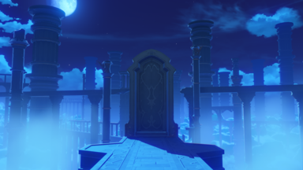

Aficiones
Soy una persona tranquila y creativa.
A la hora de hacer trabajos cooperativos puedo ocupar diferentes papeles para llevar a cabo un proyecto, intento expresar mis ideas lo mejor que puedo y si tengo una base para comenzar algo puedo desarrollarlo hasta niveles inimaginables.
Me gusta dibujar tradicional y digitalmente, también me gusta mucho escuchar música y jugar algún que otro videojuego. Estuve yendo a clases de piano por cinco años. En mi tiempo libre suelo jugar al Genshin Impact, dibujar y estudiar japonés. 